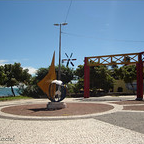

O Marco Zero
HISTÓRIA A Lei Municipal 7535/94 fixa 13 de abril de 1726 como o aniversário de Fortaleza, data em que a coroa assinou um documento, elevando a cidade à Vila. Já as Leis 0252/04 e 103/2004 instituem, respectivamente, o Dia Municipal da Barra de Santiago do Ceará e a Praça de Santiago da Barra do Ceará, localizada à margem do Rio Ceará. As duas últimas leis fazem referência à primeira edificação de Fortaleza, ou seja, o Marco Zero, Fortim de Santiago da Barra, um patrimônio histórico remete ao ano de 1604, data em que foi construído. A edificação tem o reconhecimento internacional, a partir do recebimento, em 2004, do Cruzeiro de Santiago, doado pelo governo espanhol. “Dentro do contexto do Brasil Colonial, o marco inicial é a margem direita do Rio Ceará, que é território de Fortaleza. Então esse marco construtivo, que hoje é a Barra do Ceará, fundou a Capitania do Ceará. Ainda dentro desse contexto, podemos colocar Fortaleza como uma das capitais mais antigas do País”, defende Leitão.
VALORIZAÇÃO O historiador destaca a mudança de percepção da comunidade em relação ao bairro. “A Barra do Ceará vive uma nova realidade. A comunidade tem atuado em prol da valorização da história e do patrimônio ambiental do bairro. Temos mais pessoas frequentando a praia da Barra. Alguns ônibus de turismo têm trazido turistas aqui, apresentando-os ao Marco Zero”, observa Leitão.
Nossa missão é:"Mostrar aos visitantes aonde nasceu Fortaleza.".